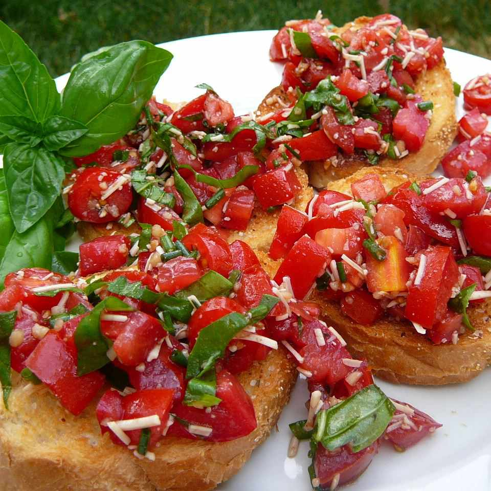

Balsamic Bruschetta

Balsamic Bruschetta
An Italian appetizer that is easy to make and so delicious. You can add any toppings you want but we are going for tomatoes, garlic, cheese, basil, and balsamic on top of toasted bread.
Ingredients
- One loaf French bread, cut into pieces
- 8 tomatoes
- basil, as much as you like
- Parmesan cheese
- minced garlic (2 cloves)
- 1 tablespoon balsamic vinegar
- salt and pepper
Directions
- Bread slices should be covered in olive oil and out in the oven to warm up.
- In the mean time, mix up all of the ingredients (tomatoes, basil, garlic, and cheese)
- Add balsamic vinegar, salt, and pepper and any spices you like.
- Add the mixture on to your bread slices
- Enjoy!